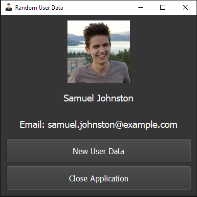

What is new in Ring 1.18
In this chapter we will learn about the changes and new features in Ring 1.18 release.
List of changes and new features
Ring 1.18 comes with the next features!
Read Files application
Random User application
Better CitPre application
Better Tools
More Samples
Syntax Files
The Power Operator
Using References
Ring for MS-DOS
Faster (For-In) Loop
Faster BraceError()
Better RingRayLib
Better RingSockets
Heroku (Better support)
Command: New From
ImportPackage() function
More Low Level functions
Better WebLib
Better Ring API
Better Documentation
MatrixLib Library
More Improvements
Read Files application
Using this application we can display text/binary files using Hexadecimal

Random User application
A simple application as an example about using GUILib, InternetLib & JSONLib

Better CitPre application
In Ring 1.18 the Citations Prediction application is updated
The application comes with 500 samples
Journal Paper (HTML): https://www.hindawi.com/journals/bmri/2022/2239152/
Journal Paper (PDF): https://downloads.hindawi.com/journals/bmri/2022/2239152.pdf
Better Tools
Ring2EXE: Better code when distributing GUI applications
Form Designer: Correct drawing for new controls after moving Ring Notepad
Ring Notepad: Output Window - Correct cursor position while using unicode
Ring Notepad: Set the default font when opening the Font dialog
Ring Notepad: Preserve editing history after text insertion
Ring Notepad: New button to clear the output and stop the running program
Ring Notepad: Goto Line - Support files contains UTF-8 characters
Ring Notepad: Find/Replace - Support files contains UTF-8 characters
Ring Notepad: Avoid hiding the cursor when pressing TAB
Ring Notepad: Reset the dockable window title when closing all opened files
Ring Notepad: Translation files (English/Arabic)
Ring Notepad: New option to build GUI application using Ring2EXE
Ring Notepad: View menu - Navigate options
Ring Notepad: View menu - Apperance options (Checkboxes)
Ring Notepad: Check if we have web application before running
Ring Notepad: Better icon for closing the application
Ring Notepad: Select file window (Quick navigation between opened files)

More Samples
Added: samples/General/OrbitalMechanics
Added: samples/UsingBingChat (Code generated by AI)
Added: samples/General/QuizMarks/QuizMarks.ring
Added: samples/UsingQt/TabActivate/simpleExample.ring
Added: samples/UsingQt/TabActivate/TabActivateController.ring
Added: samples/UsingFormDesigner/centerwindow
Added: samples/AQuickStart/MySQL/mysql11.ring
Added: samples/UsingQt3D/ex19_sceneKeyboard.ring
Added: samples/Algorithms/path_finding_bfs_usingref.ring
Added: samples/General/SmallExamples/Random/random100.ring
Added: samples/General/SmallExamples/Conjecture/knuthconjecture.ring
Added: samples/General/SmallExamples/SendMoreMoney/SendMoreMoneyMonteCarlo.ring
Added: samples/General/SmallExamples/MatrixMulti/Matrix-Func.ring
Added: samples/UsingFreeGLUT/test17.ring, test18.ring & test19.ring
Added: samples/ProblemSolving/Cryptogram/Cryptogram.ring
Added: samples/UsingArabic/ArabicSyntax
Added: samples/UsingQt/Painter/test.ring & test2.ring
Added: samples/UsingJSONLib - From test5.ring to test9.ring
File: samples/AQuickStart/GUILib/gui44.ring - Better Code
File: samples/UsingWebLib/Demo/datalib.ring - Better Code
File: samples/UsingWebLib/Demo/bootstrap.ring - Better Code
File: samples/UsingStbImage/test2.ring - Better Code
Folder: samples/UsingLibSDL - Better Code

Syntax Files
Ring 1.18 provide another step towards better syntax flexibility
Support running source code files with any extension
Automatic loading for (ringsyntax.ring) file that exist in the current folder
For example in the the next screen shot
We have (ringsyntax.ring) that translate some of the Ring keywords to Arabic language
When we execute the file with Arabic name which means in English (hello.ring)
Ring will automatically execute (ringsyntax.ring) using Load Syntax command
Each Folder in the program could have it’s optional (ringsyntax.ring) file
We can mix styles in the same project

The Power Operator
Ring 1.18 Support (**) and (^^) as the power operator
Example:
? 3**4 # 81.00
? 3^^4 # 81.00
? 256^^(1/4) # 4
? 3.4^^4.5 # 246.41
? 256^^(1/3) # 6.35
? 129.6^^(1/5) # 2.65
? 5.9736*(10^^6) # 5973600.00
? 7.3476*(10^^(-5)) # 0.0000734760
Using References
Ring as a language is designed to reduce references usage
The assignment operator (=) copy lists/objects by value
This release comes with the next functions to create and use managed references
ref(aList|oObject) ---> aList|oObject (Reference) # Short name
reference(aList|oObject) ---> aList|oObject (Reference) # Long name
refcount(variable) ---> Number (References Count)
Example:
aList = [ 10,20,30, ref(aList) ] # Circular Reference
? aList[4][1] # Print 10
? aList[4][4][4][4][4][2] # Print 20
? refcount(aList) # Print 2
We added this feature to use Ring in teaching Data Structures & Design Patterns.
Check the chapter (Using References) to learn more about using this feature!
Ring for MS-DOS
Starting from Ring 1.18, We can build Ring Compiler/VM on MS-DOS
Tested using
Watcom C 386 9.01 (1992)
Borland C 3.1 (1992)
DOSBox-x 0.83.22 (2022)
DOSBox 0.74
Tip
We use Watcom C 386 as our formal compiler on this platform
Note
Ring uses DOS/4GW (32-bit DOS extender) to eliminate the 640 KB conventional memory limit
Faster (For-In) Loop
The (For-In) Loop implementation is revised in Ring 1.18
It’s six times (6x) faster than Ring 1.17
Example:
aList = list(1_000_000)
t1 = clock()
for x in aList
next
t2 = clock()
? (t2-t1)/clockspersecond()
Time using Ring 1.18: 0.4 second
Time using Ring 1.17: 2.6 seconds
Tip
The normal (For Loop) is faster than (For-In Loop) by 25%
Example:
aList = list(1_000_000)
t1 = clock()
for t=1 to 1_000_000
x = aList[t]
next
t2 = clock()
? (t2-t1)/clockspersecond()
Time using Ring 1.18: 0.28 second
Time using Ring 1.17: 0.28 second
Faster BraceError()
Using BraceError() we can handle errors that happens inside braces
In Ring 1.18 - Calling BraceError() is faster and we can return values from this method
Example:
new points {
first { x=10 y=20 z=30 }
second { x=100 y=200 z=300 }
third { x=1000 y=2000 z=3000 }
print()
}
class points
aPoints = []
func braceerror
aPoints + new point
return aPoints[len(aPoints)]
func print
? aPoints
class point x y z
Output:
x: 10
y: 20
z: 30
x: 100
y: 200
z: 300
x: 1000
y: 2000
z: 3000
Better RingRayLib
The next functions are added to the extension
SetShaderInt(shader, Location, nValue)
SetShaderFloat(shader, Location, nValue)
SetShaderVec2(shader, Location, aValue)
SetShaderVec3(shader, Location, aValue)
SetShaderVec4(shader, Location, aValue)
SetShaderIVec2(shader, Location, aValue)
SetShaderIVec3(shader, Location, aValue)
SetShaderIVec4(shader, Location, aValue)
SetModelMaterialShader(model, nID, shader)
The next samples are ported from RayLib to RingRayLib
ring/samples/UsingRayLib/shader/custom_uniform.ring
ring/samples/UsingRayLib/shader/julia_set.ring
ring/samples/UsingRayLib/shader/model_shader.ring
ring/samples/UsingRayLib/shader/postprocessing.ring
ring/samples/UsingRayLib/shader/shapes_textures.ring
ring/samples/UsingRayLib/shader/waves.ring
Better RingSockets
The next functions are added to the extension
inet_pton(AdressFamily, IP) -> packed_address
inet_ntop(AdressFamily, packed_address) -> IP
socketsCleanup()
Heroku (Better support)
In Ring 1.18 We updated the packages to use a modern Ring version
The project is tested using Heroku-22 (Ubuntu 22.04)
Command: New From
Using (new) we can create a new object from a specific class
In Ring 1.18 we have (new from) where we provide a variable which contains the class name
Using this command we can avoid using Eval() for this common case
Example:
cClassName = "myclass2"
myobj = new from cClassName
cClassName = "myclass"
myobj = new from cClassName
class myclass
? :hello
class myclass2
? :wow
Output:
wow
hello
ImportPackage() Function
Instead of using the import command we can use the importpackage() function
This function get the package name through a string or variable
This is useful if the package name will be known only during the runtime
Syntax:
importpackage(cPackageName)
Example:
importpackage(:mypackage)
new myclass { myfunction() }
package mypackage
class myclass
function myfunction
? "Hello, World!"
More Low Level Functions
The next functions are added to the Low Level functions
ringvm_ismempool()
ringvm_runcode(cCode)
These functions could be helpful for writing tests!
The ringvm_ismempool() tell us if the memory pool still active or not.
The ringvm_runcode(cCode) execute code using Eval() & the Main Loop
See the chapter (Low Level Functions) for more information.
Better WebLib
HTTP Post - Better Code
- Application Class - More Methods:
Redirect()
NoJavaScript()
- Application Class - Attributes for JavaScript Libraries
cJSJQueryPath
cJSBootstrapPath
cCSSBootstrapPath
lNoJavaScript
- Page Class - More Methods:
theadStart(aOptions)
theadEnd()
tbodyStart(aOptions)
tbodyEnd()
tfootStart(aOptions)
tfootEnd()
WebPage Class - Support (THead, TBody & TFoot)
Better Ring API
Added: RING_API_GETFLOATPOINTER(nParameter)
Added: RING_API_ACCEPTFLOATVALUE(nParameter)
Added: RING_API_GETCHARPOINTER(nParameter)
RING_API_GETINTPOINTER - Better code when passing integer pointer
RING_API_ISLIST - Don’t accept empty strings (NULL) from Ring code
Sample: extensions/tutorial/integerpointer
Sample: extensions/tutorial/stringpointer
Example (C Code):
#include "ring.h"
#include "stdlib.h"
void changeValue(char *var)
{
strcpy(var,"Hello from C Code");
}
RING_FUNC(ring_changevalue)
{
if (RING_API_PARACOUNT != 1)
{
RING_API_ERROR(RING_API_BADPARACOUNT);
return;
}
if (!RING_API_ISSTRING(1))
{
RING_API_ERROR(RING_API_BADPARATYPE);
return;
}
char *p1 = RING_API_GETCHARPOINTER(1);
changeValue(p1);
}
RING_LIBINIT
{
RING_API_REGISTER("changevalue",ring_changevalue);
}
Example (Ring Code):
? "Loading Library"
loadlib("mylib.dll")
cString = space(100)
changevalue(:cString)
? cString
Output:
Loading Library
Hello from C Code
Better Documentation
The next chapters are improved!
Building RingQt applications for Mobile
Building RingQt applications for WebAssembly
How to compile Ring from source code?
MatrixLib Library
Ring 1.18 comes with the MatrixLib library (Contains the Matrix functions).
The source code exist in the ring/libraries/matrixlib folder
The samples exist in the ring/samples/UsingMatrixLib folder
The library comes with the next functions
1 MatrixMulti(A,B) // Exists, aka MatrixMultiply(U,V)
2 MatrixTrans(A) // Exists, aka MatrixTranspose(U)
3 MatrixPrint(U)
4 MatrixFlatPrint(U)
5 DotProduct(U,V)
6 MatrixAdd(U,V)
7 MatrixSub(U,V)
8 ScalarMultiply(k,U)
9 VectorAngle(U,V)
10 CrossProduct(U,V)
11 MatrixCofactor(U)
12 MatrixAdjoint(U)
13 MatrixInverse(U)
14 MatrixDetCalc(U) // Calls MatrixDeterminantReduce(U)
15 MatrixDeterminantReduce(U) // Any 2x2 to 10x10 Recursive
16 Determinant(U) // Calls 16a-16e Determinant2x2,3x3,4x4,5x5,6x6
17 MatrixProjection(U,V) // ProjvU = (U.V)/(V.V)xV
18 MatrixOrthoDistance(U,V)
19 VectorLength(U)
20 VectorNorm(U) // Same as VectorLength - different name
21 VectorUnit(U) // Vector Norm to a Unit Matrix
22 VectorDistance(U,V)
23 MatricOrthoNormal2(U,V) // Gram-Schmidt method for 2 Vectors in R2 Space
24 MatrixOrthoNormal3(V1,V2,V3) // Gram-Schmidt method for 3 Vectors in R3 Space
25 MatrixLuDecompose(U) // LU Decompose Matrix to Lower and Upper Matrix
26 SyntheticFactor(Eq) // Find Factors of Quartric Equation
27 SyntheticDiv(Eq,Factors) // Synthetic Division using Factors
28 QuadSolve(Eq) // Quadratric equation solve format x^2 + x + c
29 CubicSolve(Eq) // Cubic equation solve format x^3 + x^2 + x + c
30 QuarticSolve(Eq) // Solve Quartic equation format x^4 + x^3 + x^2 + x + c
31 QuinticSolve(Eq) // Solve Quintic equation format x^5 x^4 + x^3 + x^2 + x + c
31 PolyMultiply(A,B) // Polynomial Multiple [A]*[B] ascending powers left to right
32 PolyAdd(A,B) // Polynomial Add [A]+[B] ascending powers left to right
33 PolySub(A,B) // Polynomial Subtract [A]-[B] ascending powers left to right
34 CharEquation(N) // Characteristic Polynomial of 4x4 Matrix
34 EigenValueN) // Find EigenValues 2x2, 3x3, 4x4 Matrix
35 EigenVectors(A) // Find EigenVectors 2x2, 3x3 Matrix
More Improvements
NaturalLib - RunString() Method - Ignore braces inside commands
FindInFiles Application: Better Code (Check Read() function output)
GetQuotesHistory Application: Better Style
Chess/Checkers Games: Looks more nice on small screen resolutions
KnightTour Game: Avoid unnecessary invalid move message
Tessera Game: Add the window icon
SpaceShooter Game - Added: applications/spaceshooter/Resources.ring
StdLib - Tree Class - Use the ref() function
StdLib - Matrixmulti() function - Better Code
StdLib - Added: Reduce() function
RingAllegro: Use Allegro 5.2.8 instead of Allegro 5.2.7.1
RingSQLite: Use SQLite 3.39.2.
RingHTTPLib: Use cpp-httplib 0.10.9
RingZip: Use zip 0.2.4
RingCJSON: Update the CJSON version
RingCJSON: Better support for arrays and nested arrays
RingQt: Added QTextOption class
RingQt: Set the environment variable QT_QPA_PLATFORM_PLUGIN_PATH
RingQt: QMediaPlayer Class - Remove currentNetworkConfiguration() Method
RingQt: QString2 Class - Added lastIndexOf() method
RingQt: RingCodeHighlighter Class - Added setUseDefaultKeywords() Method
RingQt: RingCodeHighlighter Class - Added setCustomKeywords() Method
Ring Functions - SetEnv()/UnSetEnv() - Better Code
Ring Functions - Print()/Puts() - Better Code
Ring Functions - Eval() - Better Code
Ring Compiler/VM Source Code - Better File Names
Ring Compiler/VM Source Code - Define RING_MSDOS
Ring Compiler/VM Source Code - Many structures updated to use unsigned int/char
Ring Compiler/VM Source Code - Added: vmerror.c, vmeval.c & vmthreads.c
Ring Compiler/VM Tests - Better names for output files
Support building Ring on windows using Tiny C Compiler
Ring Object File - Better support for classes that exist inside packages
Ring Compiler - Support larger number of function/method parameters
Ring Compiler - ring_parser_epsilon() function - Better Code
Ring Compiler - Support running source code files with any extension
Ring VM - Memory Functions - Display the size when the memory allocation fail
Ring VM - Support calling private methods from the class region
Ring VM - Fixed count for ByteCode items for the ICO_FUNC instruction
Ring VM - Better code for dynamic change between function/method calls inside braces
Ring VM - Check string range when we access strings after calling functions directly
Ring VM - Get pointer as string when we access the pointer address
Ring VM - Don’t create more than one temp. list per VM instruction
Ring VM - Using RING_VM_IR_GETLINENUMBER & RING_VM_IR_SETLINENUMBER(x)
Ring VM - Faster code when creating new threads
Ring VM - Better numbers format when printing lists and objects
Ring VM - Range Operator - return list reference instead of a copy
Ring VM - Pointer2Object() function - return list/object reference instead of a copy
Ring VM - ObjectID() function - Support Lists too
Ring VM - Increase the Stack size to 1K
Ring VM - Error System - Display recursion depth
Ring VM - ICO_FREESTACK instruction - Don’t delete temp. lists in global scope
Ring VM - ICO_FREETEMPLISTS instruction - Delete temp. lists in global scope (Thread Safe)
Ring VM - ICO_SETSCOPE instruction - Better implementation
Ring VM - List Functions - Using (unsigned int) for the list index & size
Ring VM - Using Braces - Save/Restore the State - Better Code
Ring VM - Divide Operator - Display error message - Better Code
Ring VM - Try/Catch/Done - Better code for memory management
Ring VM - Using lists during definition - Protect the list (Prevent deleting it)
Ring VM - The default RING_POOLMANAGER_ITEMSIZE value is 40 (instead of 64)
Ring VM - Better code when loading the VM instructions (Uses less memory)
Ring VM - Max. parameters for each VM instruction is three (3)
Ring VM - New instruction: ICO_EXTRAPARA (For instructions that need more parameters)
Ring VM - Delete the Intermediate Code list after having the Byte Code
Ring VM - Better format when displaying the Byte Code
Ring VM - Memory defragmentation before Byte Code execution